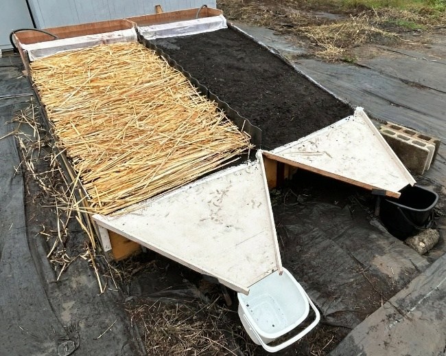
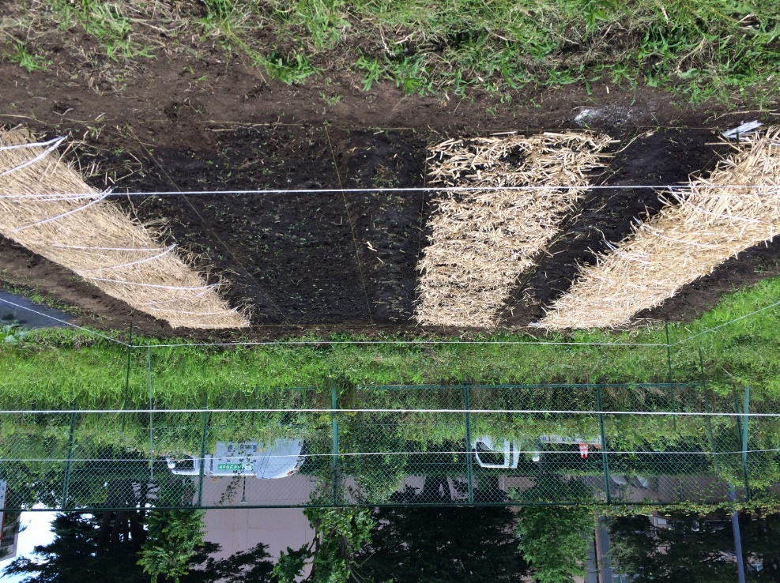
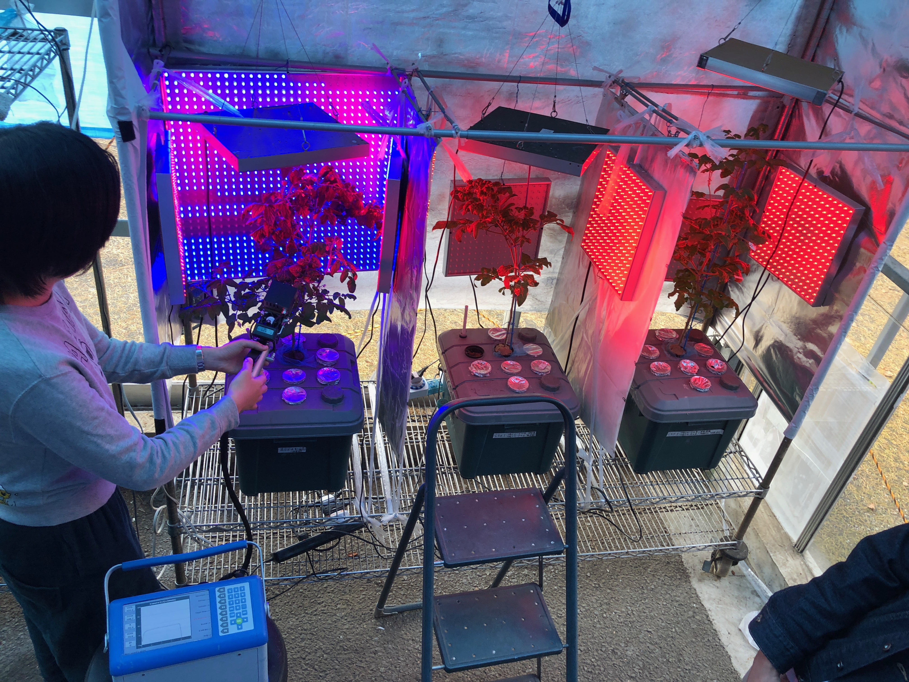

IECL / 研究
研究の詳細
水質浄化、農地管理、植物の水利用、土壌・水・植物系の評価を４つの事例から紹介する。
浮遊型ベチバーによる水質浄化
水の種類によって、浮遊型ベチバーの浄化応答はどう異なるか。
研究の組み立て
浮遊型装置で自然水、富栄養化した模擬水、畜産排水を処理し、水質の変化を比較した。
観察されたこと
窒素や懸濁物質の減少が認められた一方、リンや有機物の変化は水の種類によって異なった。
結果の解釈
植物による浄化を評価するには、水質や処理条件を踏まえる必要がある。処理後の植物体の利用についても、蓄積した物質を含めて安全性を確認することが重要である。

関連論文・発表：こちら
ベチバーの地上部をマルチに利用する
日本の温帯農地で、ベチバーの地上部は有機マルチとして使えるか。
研究の組み立て
ベチバーや稲わらによる表面被覆、ベチバーチップの土壌混和、裸地を比較した。オクラを栽培する圃場では土壌水分・生育・雑草を調べ、別の流水実験では表面流出と流出土量を測定した。
観察されたこと
圃場では資材を施用した区で土壌水分が高く保たれる傾向が見られ、流水実験では表面被覆による流出土量の減少が認められた。
結果の解釈
地上部バイオマスは、水土保全に利用できる地域資源として検討している。圃場で見られた違いは試験条件に依存するため、土壌・気象・施用方法を踏まえて有効性を評価する。


葉面への被覆処理とLED照射による蒸散の変化
葉面への被覆処理とLED照射は、それぞれの栽培条件下で蒸散にどう影響するか。
研究の組み立て
屋外栽培では繊維膜被覆や粒子フィルムによる葉面処理を、施設内栽培では赤色・青色LEDの照射条件を検討している。異なる方法を通じて、植物の生育と蒸散の関係を調べる。
分析の考え方
植物の形態から予測される蒸散量と実測値を比較し、生育に伴う変化と照射条件に対する応答を捉えるための指標を検討している。
結果と限界
葉面処理への応答は植物種や生育段階によって異なった。LEDの試験では、照射条件によって生育と蒸散の関係が変化した。蒸散の減少だけで節水効果を判断せず、生育への影響と併せて評価する。

関連論文・発表：2002年の論文（繊維膜） · 2013年の発表要旨（LED、加藤友梨香・ロイ） · 2017年の学会発表（粒子フィルム、ロイ・Zwieniecki） · 2019年のAGU発表（光環境と節水）
土壌・水・植物の機能から地域の保全・再生を考える
数値が一つ改善しただけで、農地の機能が回復したと言えるか。
考え方
土壌・水・植物の個々の性質と相互作用を捉える。植物の根や微生物の働きも土壌と水の状態に影響するため、資源を組み合わせたときの機能や有効性を評価する。
保全と修復
現地の課題と劣化の要因を把握し、地域資源の持続可能な利用と環境の保全・修復を両立させる方法を検討する。地域の条件や利用の実態を踏まえ、現地で受け入れられる対策につなげる。
評価するもの
現地調査、基礎実験、分析・計測を組み合わせ、保水・浸透・物質移動・植物応答などを評価する。USLE・WEPP・HYDRUSなどのモデルを用い、現地の測定結果を研究目的に応じて解析する。GIS・リモートセンシングも、土地利用や流域の空間的な評価に用いてきた手法の一つである。